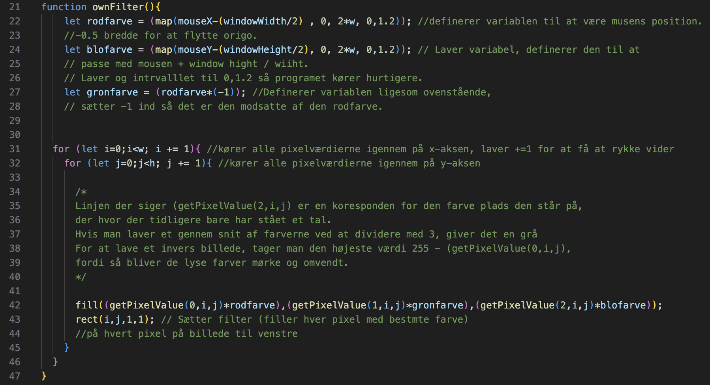

Billedemanipulation
Lavet med Angela og Tristan
I forløbet om billedemanipulation skulle vi designe et program i Javascript, som kunne redigere billeder på pixel-niveau, samt kunne tilføje effekter.
Dette gjorde vi ved at udnytte forskellige egenskaber ved pixels og Js kodning.
Pixels er de mindste elementer, der udgør et digitalt billede. Et billede er opbygget af millioner af pixels, og hver pixel repræsenterer en enkelt farve eller tone af farve. Pixelstørrelsen bestemmer billedets opløsning, og jo flere pixels, desto højere opløsning har billedet.
RGB (rød, grøn, blå) værdier er en måde at repræsentere farver på i digitale billeder. Hver pixel i et RGB-billede har 4 værdier, en for rød, en for grøn og en for blå, som hver især kan variere fra 0 til 255. Disse værdier bestemmer intensiteten af hver farvekomponent, og kombinationen af disse tre farver skaber en bred vifte af farver.
For eksempel, når alle tre værdier er sat til deres maksimale værdi (255, 255, 255), opnås den hvide farve, mens en pixel med nulværdier (0, 0, 0) repræsenterer sort.
Pixels har også en såkaldt "alpha"-værdi som bestemmer gennemsigtligheden af den enkelte pixels farve.
Eksempel fra vores kode
Herunder ses koden fra vores billedemanipulationsprogram

Her er udklip af vores funktion kaldet "ownFilter". Det er denne funktion som laver selve filteret i vores program.
Vi starter med at definere nogle variable i linje 22-27. Disse variable får en værdi baseret på musens lokation på skærmen og vi laver her 3 styks.
Musens lokation er baseret på dens x- og y-værdi, hvor origo ligger i øverste venstre hjørne af skærmen.
Her vil en positiv y-værdi være nedad, mens en positiv x-værdi vil være til højre.
Vi trækker derfor halvdelen af vinduets bredde/højde fra, for at flytte origo ind på midten, og vi på den måde kan bruge x- og y-aksen negative værdier.
I linje 31-32 kører den alle pixel-lokationerne igennem, altså henter deres x- og y-værdi.
Denne information bruges i linje 42, hvor vi så reelt farver billedet til venstre. Vi gør brug af "fill()", som har 3 betingelser: Rød, Grøn og Blå.
Normalt vil man indsætte et tal mellem 0-255, men vi indsætter i stedet en funktion, som henter de forskellige pixel-værdier.
Denne funktion har vi givet 3 betingelser: "RGBA" (altså hvilken værdi vi henter ind, hvor 0 er rød, 1 er grøn, 2 er blå og 3 er alpha), mens i og j bestemmer koordinaterne for den givne pixel, som der hentes information fra.
Værdien fra denne funktion bliver så ganget med vores variable, som blev defineret over.
Dog skaber denne "fill()" ikke selv firkanterne, som skal farve skærmen, men blot hvilken farve det skal være. Selve firkanterne bliver dannet i linjen under, og placeret på koordinaterne for de enkelte pixels.
Prøv vores billedemanipulationsprogram: Her!